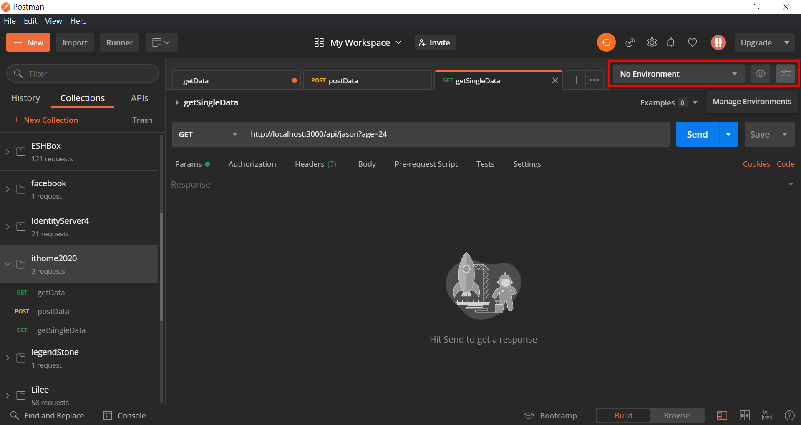

DAY14- postman環境設定與API授權設定
DAY-14- postman環境設定與API授權設定
前一篇提到postman的基本用法，可以透過postman去取得API資料。這一篇要來提比較進階的用法，讓postman的使用可以更便利
設定API環境變數
為什麼需要設定API環境?
在一般的開發流程中，通常至少會有兩種API環境可以使用。一種是正式環境，一種是測試環境。正式環境是給外部正式使用，通常比較嚴謹，不隨意給開發者使用；測試環境是給開發人員使用，可以在上面做各種測試與使用，不會影響到其他環境。
通常正式環境與測試環境的路由都會使用同樣的路由，不一樣的地方就只有網域而已，例如:
- 正式環境:
www.xxxxx.com/api - 測試環境:
www.xxxxx-test.com/api
而假設取得資料的api路由為 getData
所以取得這支API的完整路徑為:
- 正式環境:
www.xxxxx.com/api/getData - 測試環境:
www.xxxxx-test.com/api/getData
兩個路徑就只有差在網域而已。如果想要測試同一支API在不同環境的差異的話，就要一直重複貼上網域名稱去切換。這樣的話，不如把網域名稱當成環境變數，可以快速切換。
使用環境變數
在postman的右上角，有環境變數的地方可以設定，點擊最右邊的按鈕可以管理環境變數

如果沒有使用過，列表應該是空的，點選右下角橘色的按鈕新增環境變數

環境變數也是以組為概念，一組環境變數裡面可以設定不同的變數。
在這裡建立一個變數 local 對應到的值是 [http://localhost:3000/](http://localhost:3000/)
可以看到欄位有分 INITIAL VALUE 和 CURRENT VALUE 兩種。可以暫時不用去管他，都填一樣的就好了。

新增完之後，就可以從環境變數的列表上面選擇環境，在此選擇剛剛建立好的新環境

套用環境變數
在網址區，使用兩個中括號代表變數，使用剛剛設定好的變數local，發送出去，可以看到請求依然成功

如果變數有套用成功，滑鼠移到變數上面，就可以看到變數代表的值是什麼

變數這樣就設定成功了。
如果想要設定不同的環境，就可以設定不同的環境，用同樣的變數來切換。
API加上授權資訊
有些API並非公開提供任何人使用的API。需要有授權資訊，通過授權的人才可以存取。
postman也可以幫你加上API的授權資訊
選擇Authorization的頁籤，然後可以選擇授權的種類，選擇好之後，在Token的欄位貼上token就完成囉

API自動取得認證資訊
讓API幫你帶上授權資訊固然方便，但是有沒有更方便的方法呢?畢竟還要去拿API的授權資訊後再貼上，還是略顯麻煩。有沒有方法可以自動幫我取得授權資訊之後自動貼上呢?
答案是:有!
在Collection的右下角，有”…”的按鈕，點下去之後，選擇Edit

可以看到有很多頁籤，其中有一個頁籤是 Pre-request Scripts

Pre-request Scripts 的意思就是在發出API請求之前，可以先執行某些功能，我們利用此功能，來寫一段幫我們取得授權資訊並且幫我們填上的功能。
額外小補充:postman是用Electron寫的，Electron是一個可以將html、css、javascript包裝成應用程式的框架，也就是前端工程師平常所熟悉的東西。所以在postman上面也可以操作javascript
在這我們貼上我們寫好的程式，一段很簡單的 javascript
幫我們先打認證的API，然後取得API的結果，將結果放進我們自訂的變數access_token中
const apiRequest = {
url: 'https://www.xxxxx.com/api/auth/token',
method: 'POST',
header: 'Content-Type:application/json',
body: {
mode: 'raw',
raw: JSON.stringify({
"acciunt": "帳號",
"password": "密碼"
})
}
};
pm.sendRequest(apiRequest, function(err, res) {
if (!err) {
const jsonResponse = res.json();
console.log(jsonResponse)
pm.environment.set("access_token", jsonResponse.access_token);
}
});再到Authorization的頁籤，將 {{access_token}} 的變數放上去，就可以自動取得授權資訊並且貼上囉